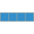
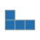
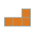
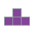

Rule テトリスの基本ルール
概要
7種類のテトリミノがフィールド上部からランダムに1つずつ落下してきます．テトリミノを操作しフィールドに敷き詰めると，揃った横一列が消去されます．
より長い時間，プレイを続けることを目指すゲームです．
基本ルール
フィールドは公式に，縦20行横10列と決まっています．ミノは左右90度に回転させたり左右に移動させたりできます．
また，ミノの落下地点が表示されるゴーストはハードドロップを行う場合役に立ちます．
NEXTには，次以降出現するミノが表示されます．
HOLDを利用すれば，落下中のミノをホールドしておいたり，必要なときに交換したりできます．
詳細
テトリスが発売された当初，さまざまなプラットフォーム向けに開発されたものの，根本にあるルール以外は統一されておらず，操作感が異なることもありました．
そこで，ザ・テトリスカンパニー社のヘンク・ブラウアー・ロジャースがガイドラインを制定しました．
このガイドラインはワールドルール，世界基準とも呼ばれ2002年に初めて採用されました．
ワールドルール
ミノの色，向きの統一
ミノの色，出現時の向きは決められています.
ミノのツモについて
ミノの出現方法は，全くのランダムといわけではありません．Holdの実装
ミノを1つだけキープし，必要なときに入れ替えられるシステムです．最低2つのNext
次に落ちてくるミノを表示するNEXTブロックは，ゴーストブロックの表示
ミノの落下地点を影のように表示するシステムです．ハードドロップの実装
自由落下ではなく，即時に接地できるシステム．スーパーローテーションシステム
直感的にプレイするための回転法則です．T-Spin
Tミノを回転入れする技術．
| ミノ | 色 | 画像 |
|---|---|---|
| I | 水色 |  |
| O | 黄色 | |
| S | 緑色 | |
| Z | 赤色 | |
| J | 青色 |  |
| L | 橙色 |  |
| T | 紫色 |  |
7つのミノが1セットになって，1セットの中でランダムに出現します．そのセットの繰り返しです．
ただし，一度入れ替えた後はミノを接地するまで使えなくなります．
2つ以上表示しなければなりません．6つ先まで表示されるソフトもあります．
オプションで非表示にできるソフトが多いです．
多くのソフトではその際の遊び時間はありません．
詳しくはSRSへ
Oミノを除くミノで回転入れは存在しますが，T-Spinにおいては通常よりも得点が入ります．
対戦時にラインセント量が増えるなどのボーナスを採用しています．